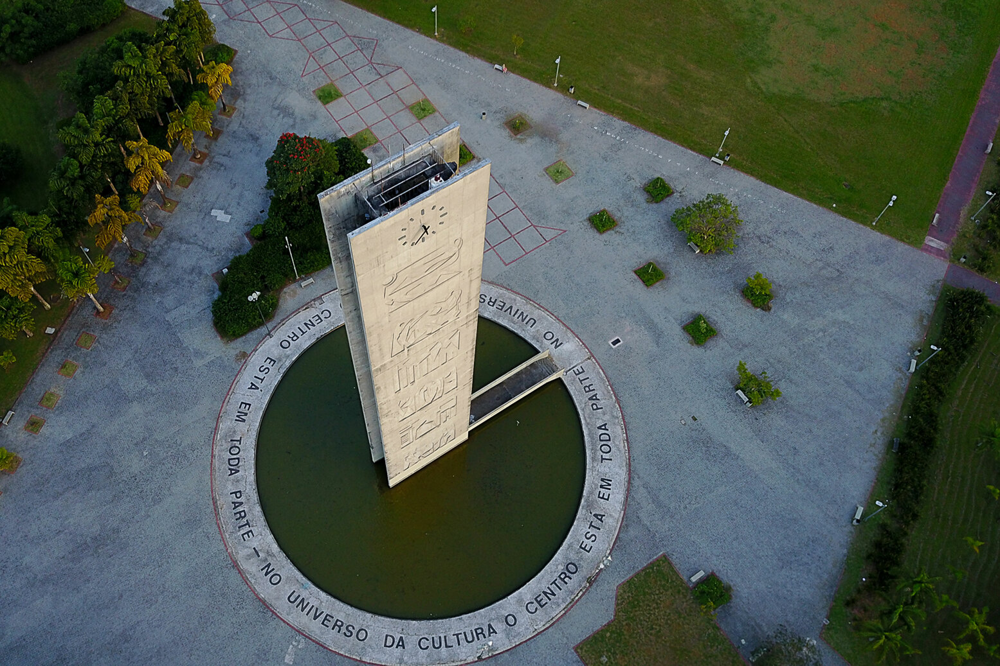
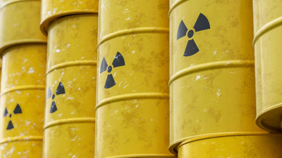
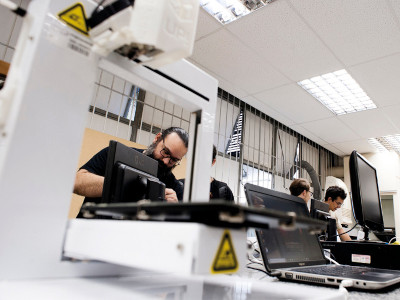
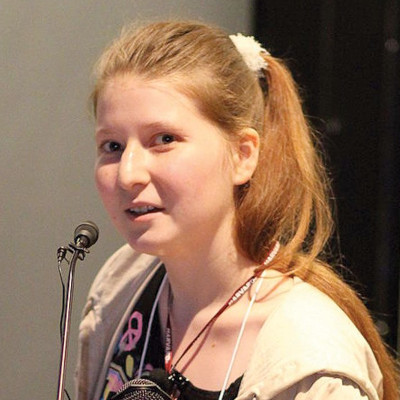

September 13 08:44 PM born in Guarulhos, Brazil.
Welcome to my place on the internet! Here you will find out about all my works and projects. Also, I have put here some stuff I like and find interesting. Feel free to have a look around!

Clock tower square at USP - "In the cultural universe, the centre is everywhere."

Institute of Energy and Nuclear Research - IPEN/CNENComputational modelling of radiative waste deposit.
Quality analysis of temperature measurements of the bottom of clouds in the infrared band using cost-effective equipment.

Hackerspace IFUSPOpen-source laboratory at the Institute of Physics at USP.
September 13 08:44 PM born in Guarulhos, Brazil.
Awarded bronze medal in the Brazilian Mathematics Olympiads 2017 edition.
Awarded in the USP Knowlegde Competition.
Graduated from High School.
Accepted into the University of São Paulo to study BSc in Physics and Astronomy.
Volunteering at Hackerspace IF-USP.
Internship at the Centre for Computing at IF-USP.
Undergraduate Research at the Laboratory of Atmospheric Radiation and Aerossols.
Took part in the Latin-American Workshop for Numerical Modelling of Solar Radiation.
2022 Summer school at IF-USP.
Internship at the Brazilian Nuclear Energy Commission.

Alexandra ElbakyanScientist
Journalist
Astronomer